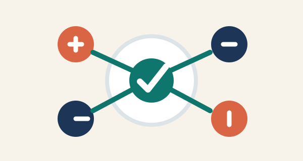

Comunicación inmediata
Facilita hablar con familiares, amigos y compañeros aunque estén lejos.
Aprendizaje
Permite acceder a videos, cursos, comunidades y materiales educativos.

Participación social
Ayuda a compartir opiniones, apoyar causas y conocer distintas realidades.
Oportunidades
Puede apoyar negocios, proyectos escolares, emprendimientos y creatividad.